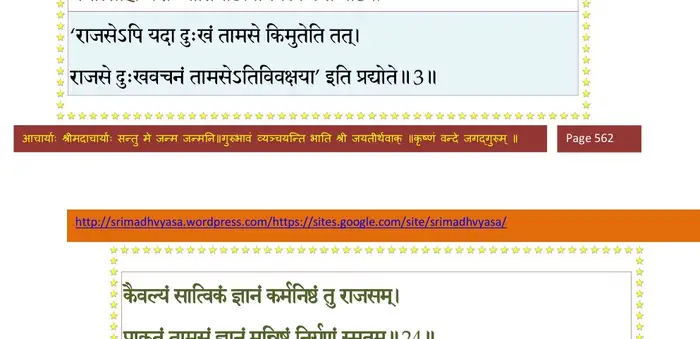
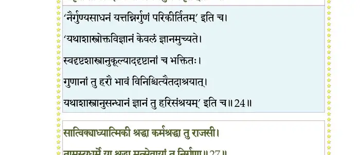
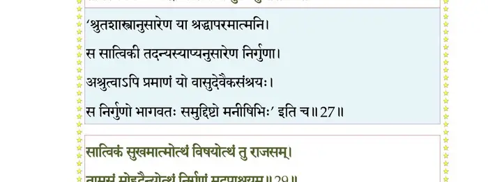
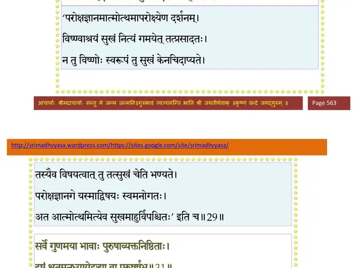
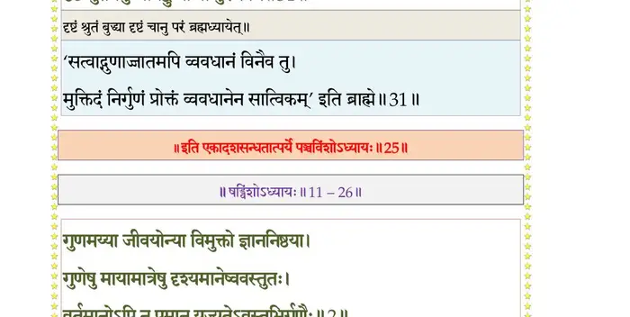

स्कन्ध 11 · अध्याय 25
श्लोक १
श्रीभगवानुवाच–
गुणानामप्यमिश्राणां पुमान् येन यथा भवेत् ।
तन्मे पुरुषवर्येदमुपधारय शंसतः ।। १ ।।
गुणानामप्यमिश्राणां पुमान् येन यथा भवेत् ।
तन्मे पुरुषवर्येदमुपधारय शंसतः ।। १ ।।
श्लोक २
शमो दमस्तितिक्षेक्षा तपः सत्यं दया स्मृतिः ।
तुष्टिस्त्यागोऽस्पृहा श्रद्धा ह्रीः क्षमा निस्तुतिर्धृतिः।। २ ।।
तुष्टिस्त्यागोऽस्पृहा श्रद्धा ह्रीः क्षमा निस्तुतिर्धृतिः।। २ ।।
श्लोक ३
काम ईहा मदस्तृष्णा (मनस्तृष्णा) स्तम्भ आशीर्भिदाऽसुखम् ।
मनोत्साहो यशः प्रीतिर्धार्ष्ट्यवीर्यबलोद्यमाः ।। ३ ।।
मनोत्साहो यशः प्रीतिर्धार्ष्ट्यवीर्यबलोद्यमाः ।। ३ ।।
भागवततात्पर्यनिर्णय

श्लोक ४
क्रोधो लोभोऽनृतं हिंसा माया दम्भोऽक्षमा कलिः ।
शोकमोहौ विषादार्ती निद्राऽऽशा भीरनुद्यमः ।। ४ ।।
शोकमोहौ विषादार्ती निद्राऽऽशा भीरनुद्यमः ।। ४ ।।
श्लोक ५
सत्वस्य रजसश्चैव तमसश्चानुपूर्वशः ।
वृत्तयो वर्णितप्रायाः सन्निपातमथो शृणु ।। ५ ।।
वृत्तयो वर्णितप्रायाः सन्निपातमथो शृणु ।। ५ ।।
श्लोक ६
सन्निपातस्त्वहमिति ममेत्युद्धव या मतिः ।
व्यवहारः सन्निपाते मनोमात्रेन्द्रियासुभिः ।। ६ ।।
व्यवहारः सन्निपाते मनोमात्रेन्द्रियासुभिः ।। ६ ।।
श्लोक ७
धर्मे चार्थे च कामे च यदाऽसौ परिनिष्ठितः ।
गुणानां सन्निकर्षोऽयं श्रद्धारतिधनावहः ।। ७ ।।
गुणानां सन्निकर्षोऽयं श्रद्धारतिधनावहः ।। ७ ।।
श्लोक ८
प्रवृत्तिलक्षणां निष्ठां पुरुषो यर्हि गृहाश्रमे ।
स्वधर्मे चानुतिष्ठेत गुणानां समितिर्हि सा ।। ८ ।।
स्वधर्मे चानुतिष्ठेत गुणानां समितिर्हि सा ।। ८ ।।
श्लोक ९
पुरुषं सत्वसंयुक्तमनुमायाच्छमादिभिः ।
कामादिभी रजोयुक्तं क्रोधाद्यैस्तमसाऽवृतम् ।। ९ ।।
कामादिभी रजोयुक्तं क्रोधाद्यैस्तमसाऽवृतम् ।। ९ ।।
श्लोक १०
यदा भजति मां भक्त्या निरपेक्षः स्वकर्मभिः ।
तं सत्वप्रकृतिं विद्यात् पुरुषं स्त्रियमेव च ।। १० ।।
तं सत्वप्रकृतिं विद्यात् पुरुषं स्त्रियमेव च ।। १० ।।
श्लोक ११
यदा आशिष आशास्य मां यजेत स्वकर्माभिः ।
तं रजःप्रकृतिं विद्यात् हिंसामाशास्य तामसम् ।। ११ ।।
तं रजःप्रकृतिं विद्यात् हिंसामाशास्य तामसम् ।। ११ ।।
श्लोक १२
सत्वं रजस्तम इति गुणा जीवस्य नैव मे ।
चित्तजा यैस्तु भूतानां सज्जमानो निबध्यते ।। १२ ।।
चित्तजा यैस्तु भूतानां सज्जमानो निबध्यते ।। १२ ।।
श्लोक १३
यदेतरौ जयेत् सत्वं भास्वरं विशदं शिवम् ।
तदा सुखेन युज्येत धर्मज्ञानादिभिः पुमान् ।। १३ ।।
तदा सुखेन युज्येत धर्मज्ञानादिभिः पुमान् ।। १३ ।।
श्लोक १४
यदा जयेत् तमस्सत्वे रजः सङ्गभिदाचलम् ।
तदा(ऽसुखेन) दुःखेन युज्येत कर्मणा यशसा श्रिया।। १४ ।।
तदा(ऽसुखेन) दुःखेन युज्येत कर्मणा यशसा श्रिया।। १४ ।।
श्लोक १५
यदा जयेद् रजस्सत्वे तमो मूढं (मूढो) ह्ययं जनः ।
युज्यते शोकमोहाभ्यां निद्रया हिंसयाऽऽशया।। १५ ।।
युज्यते शोकमोहाभ्यां निद्रया हिंसयाऽऽशया।। १५ ।।
श्लोक १६
यदा चित्तं प्रसीदेत इन्द्रियाणां च निर्वृतिः ।
देहेऽभयं मनोऽसङ्गं तत् सत्वं विद्धि मत्पदम्।। १६ ।।
देहेऽभयं मनोऽसङ्गं तत् सत्वं विद्धि मत्पदम्।। १६ ।।
श्लोक १७
विकुर्वन् क्रियया चाधीरनिवृत्तिश्च चेतसः ।
गात्रास्वास्थ्यं मनो भ्रान्तं रज एतैर्निशामय।। १७ ।।
गात्रास्वास्थ्यं मनो भ्रान्तं रज एतैर्निशामय।। १७ ।।
श्लोक १८
सीदच्चितं विलीयेत चेतसो ग्रहणेऽक्षमम् ।
मनो नष्टं तमो ग्लानिस्तमस्तदुपधारय ।। १८ ।।
मनो नष्टं तमो ग्लानिस्तमस्तदुपधारय ।। १८ ।।
श्लोक १९
एधमाने गुणे सत्त्वे देवानां बलमेधते ।
असुराणां च रजसि तमस्युद्धव रक्षसाम्।। १९ ।।
असुराणां च रजसि तमस्युद्धव रक्षसाम्।। १९ ।।
श्लोक २०
सत्वाज्जागरणं विद्याद् रजसा स्वप्नमादिशेत् ।
प्रस्वापं तमसा जन्तोस्तुरीयं त्रिष्वसङ्गतम्।। २० ।।
प्रस्वापं तमसा जन्तोस्तुरीयं त्रिष्वसङ्गतम्।। २० ।।
श्लोक २१
उपर्युपरि गच्छन्ति सत्वेनाब्रह्मणो जनाः ।
तमसा अधोऽध आमुख्याद् रजसाऽन्तरचारिणः।। २१ ।।
तमसा अधोऽध आमुख्याद् रजसाऽन्तरचारिणः।। २१ ।।
श्लोक २२
सत्वे प्रलीनाः स्वर्यान्ति नरलोकं रजोलयाः ।
तमोलयास्तु निरयं यान्ति मामेव निर्गुणाः।। २२ ।।
तमोलयास्तु निरयं यान्ति मामेव निर्गुणाः।। २२ ।।
श्लोक २३
मदर्पणं निष्फलं वा सात्विकं निजकर्म तत् ।
राजसं फलसङ्कल्पं हिंसाप्रायादि तामसम्।। २३ ।।
राजसं फलसङ्कल्पं हिंसाप्रायादि तामसम्।। २३ ।।
श्लोक २४
कैवल्यं सात्विकं ज्ञानं कर्मनिष्ठं तु राजसम् ।
प्राकृतं तामसं ज्ञानं मन्निष्ठं निर्गुणं स्मृतम्।। २४ ।।
प्राकृतं तामसं ज्ञानं मन्निष्ठं निर्गुणं स्मृतम्।। २४ ।।
भागवततात्पर्यनिर्णय

श्लोक २५
वनं तु सात्विको वासो ग्रामो राजस उच्यते ।
तामसं द्यूतसदनं मन्निकेतं तु निर्गुणम्।। २५ ।।
तामसं द्यूतसदनं मन्निकेतं तु निर्गुणम्।। २५ ।।
श्लोक २६
सात्विकः कारकोऽसङ्गी रागान्धो राजसः स्मृतः ।
तामसः स्मृतिविभ्रष्टो निर्गुणो मदपाश्रयः ।। २६ ।।
तामसः स्मृतिविभ्रष्टो निर्गुणो मदपाश्रयः ।। २६ ।।
श्लोक २७
सात्विक्याध्यात्मिकी श्रद्धा कर्मश्रद्धा तु राजसी ।
तामस्यधर्मे या श्रद्धा मत्सेवायां तु निर्गुणा ।। २७ ।।
तामस्यधर्मे या श्रद्धा मत्सेवायां तु निर्गुणा ।। २७ ।।
भागवततात्पर्यनिर्णय

श्लोक २८
पथ्यं युक्तमनायस्तमाहार्यं सात्विकं स्मृतम् ।
राजसं चेन्द्रियप्रेष्ठं तामसं चार्तिदाशुचि ।। २८ ।।
राजसं चेन्द्रियप्रेष्ठं तामसं चार्तिदाशुचि ।। २८ ।।
श्लोक २९
सात्विकं सुखमात्मोत्थं विषयोत्थं तु राजसम् ।
तामसं मोहदैन्योत्थं निर्गुणं मदपाश्रयम् ।। २९ ।।
तामसं मोहदैन्योत्थं निर्गुणं मदपाश्रयम् ।। २९ ।।
भागवततात्पर्यनिर्णय

श्लोक ३०
द्रव्यं देशः फलं कालो ज्ञानं कर्म च कारकः ।
श्रद्धाऽवस्था कृतिर्निष्ठा त्रैगुण्याः सर्व एव हि ।। ३० ।।
श्रद्धाऽवस्था कृतिर्निष्ठा त्रैगुण्याः सर्व एव हि ।। ३० ।।
श्लोक ३१
सर्वे गुणमया भावा पुरुषाव्यक्तनिष्ठिताः ।
दृष्टं श्रुतमनुध्यायेद् बुध्या वा पुरुषर्षभ ।। ३१ ।।
दृष्टं श्रुतमनुध्यायेद् बुध्या वा पुरुषर्षभ ।। ३१ ।।
भागवततात्पर्यनिर्णय

श्लोक ३२
एताः संसृतयः पुंसां गुणकर्मनिबन्धनाः ।
येनेमे निर्जिताः सौम्य गुणा जीवेन चित्तजाः ।
भक्तियोगेन मन्निष्ठो मद्भावाय प्रपद्यते ।। ३२ ।।
येनेमे निर्जिताः सौम्य गुणा जीवेन चित्तजाः ।
भक्तियोगेन मन्निष्ठो मद्भावाय प्रपद्यते ।। ३२ ।।
श्लोक ३३
सत्वं चाभिजयेत् युक्तो नैरपेक्ष्येण शान्तधीः ।
सम्पद्यते गुणैर्मुक्तो जीवं जीवो विहाय माम् ।। ३३ ।।
सम्पद्यते गुणैर्मुक्तो जीवं जीवो विहाय माम् ।। ३३ ।।
श्लोक ३४
तस्माद् देहमिमं लब्ध्वा ज्ञानविज्ञानसम्भवम् ।
मयैव ब्रह्मणा पूर्णो न बहिर्नाऽन्तरश्चरेत् ।। ३४ ।।
मयैव ब्रह्मणा पूर्णो न बहिर्नाऽन्तरश्चरेत् ।। ३४ ।।
।। इति श्रीमद्भागवते एकादशस्कन्धे पञ्चविंशोऽध्यायः ।।